Project Veil Map Art Upgrade Preview
当前预览的是仓库内已经落地的真实地图资源。方向：更高保真的像素风 + 冷峻边境风。
Terrain
地块主色调切到冷灰底和低饱和边境气质，保留默认缩放下的快速识别。
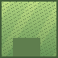
grass-tile
pixel/terrain/grass-tile.png
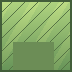
grass-tile-alt
pixel/terrain/grass-tile-alt.png
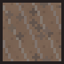
dirt-tile
pixel/terrain/dirt-tile.png
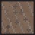
dirt-tile-alt
pixel/terrain/dirt-tile-alt.png
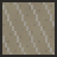
sand-tile
pixel/terrain/sand-tile.png
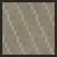
sand-tile-alt
pixel/terrain/sand-tile-alt.png
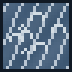
water-tile
pixel/terrain/water-tile.png
water-tile-alt
pixel/terrain/water-tile-alt.png
hidden-tile
pixel/terrain/hidden-tile.png
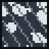
hidden-tile-alt
pixel/terrain/hidden-tile-alt.png
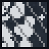
hidden-tile-deep
pixel/terrain/hidden-tile-deep.png
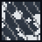
fog-tile
pixel/terrain/fog-tile.png
Fog
迷雾保留现有 mask 语义，但已经换成分层压暗和噪点边缘，不再是纯黑遮罩。
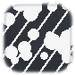
hidden-0
placeholder/fog/hidden-0.png
hidden-7
placeholder/fog/hidden-7.png
explored-0
placeholder/fog/explored-0.png
explored-7
placeholder/fog/explored-7.png
Buildings
建筑轮廓保持当前槽位和尺寸，但语义收到了边境据点、冷石祭坛和前线工事方向。
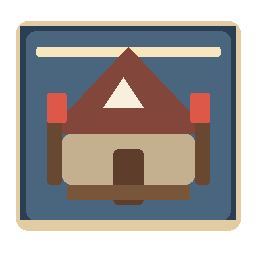
recruitment-post
pixel/buildings/recruitment-post.png
attribute-shrine
pixel/buildings/attribute-shrine.png
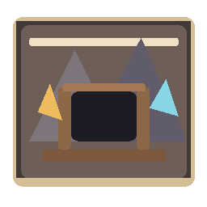
resource-mine
pixel/buildings/resource-mine.png
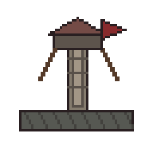
forge-hall / watchtower
pixel/buildings/forge-hall.png
Resources
资源点按材质区分，不再只靠颜色变化表达种类。
gold-pile
pixel/resources/gold-pile.png
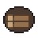
wood-stack
pixel/resources/wood-stack.png
ore-crate
pixel/resources/ore-crate.png